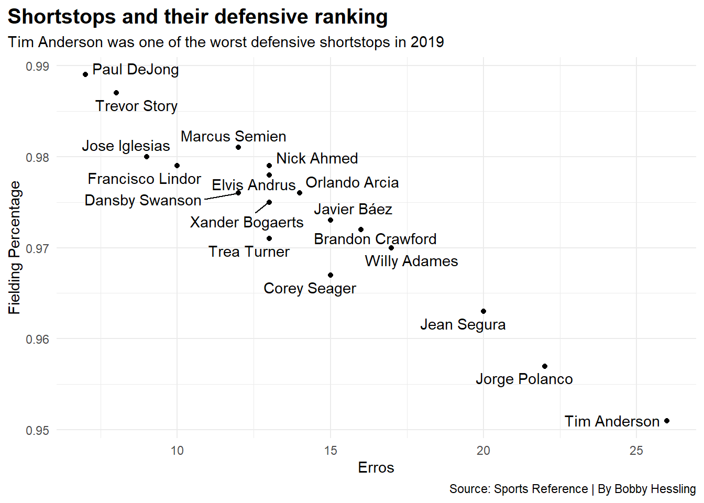
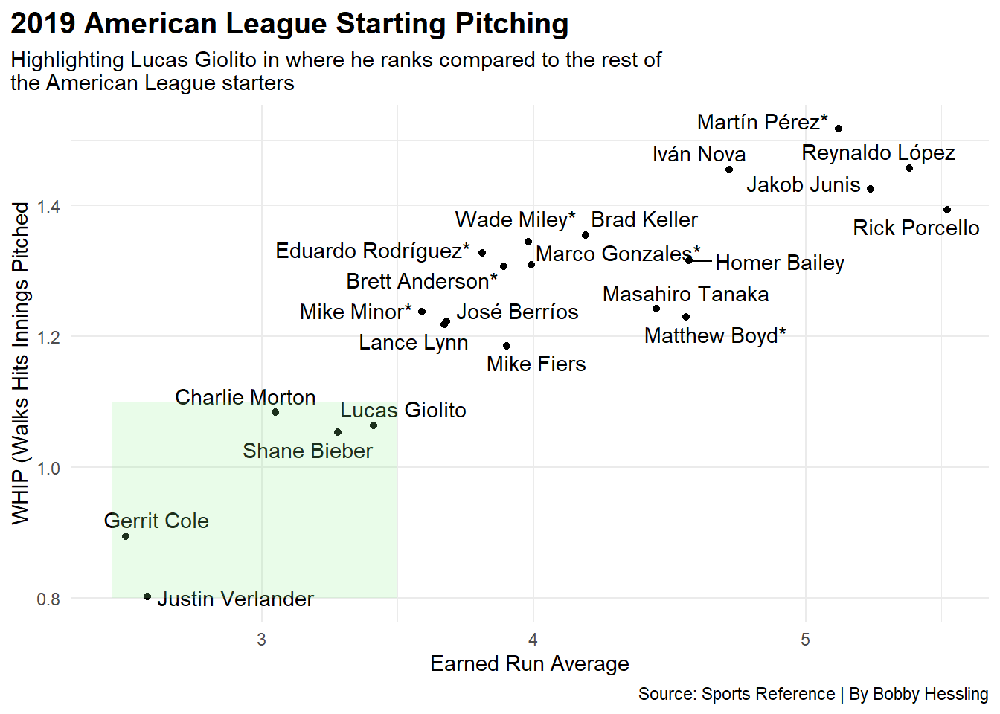

CWSHome <- whitesoxgame |>filter(Home =="CHW") |>group_by(Season, Tm) |>arrange(Tm, Date) |>filter(Wins ==max(Wins) & Losses ==max(Losses)) |>mutate(WinPCT = Wins/(Wins + Losses)) |>select(Tm, Season, WinPCT, Home, Away)CWSGooseEra <- CWSHome |>filter( Season =="2019"| Season =="2020"| Season =="2021")CWSPostGoose <- CWSHome |>filter( Season =="2022"| Season =="2023") CWSGooseOverall <- CWSHome |>filter( Season =="2019"| Season =="2020"| Season =="2021"| Season =="2022"| Season =="2023") ggplot() +geom_bar(data=CWSGooseEra, aes(x=Season, weight=WinPCT), fill="black") +geom_bar(data=CWSPostGoose, aes(x=Season, weight=WinPCT), fill="grey") +labs(y="Win Percentage at Home",title="The Goose head that was in right field, White Sox Home Record", subtitle="The goose head that was in Right field in 2019 to 2021 then the fall off with the White Sox home record", caption="Source: Sports-Reference.com | By Bobby Hessling") +theme_minimal()
Code
CWS1921 <- whitesoxgame |>filter( Season =="2019"| Season =="2020"| Season =="2021" ) |>group_by(Season, Tm) |>arrange(Tm, Date) |>filter(Wins ==max(Wins) & Losses ==max(Losses)) |>mutate(WinPCT = Wins/(Wins + Losses)) |>select(Tm, Season, WinPCT, Home, Away)CWS2223 <- whitesoxgame |>filter( Season =="2022"| Season =="2023") |>group_by(Season, Tm) |>arrange(Tm, Date) |>filter(Wins ==max(Wins) & Losses ==max(Losses)) |>mutate(WinPCT = Wins/(Wins + Losses)) |>select(Tm, Season, WinPCT, Home, Away)ggplot() +geom_bar(data=CWS1921, aes(x=Season, weight=WinPCT), fill="black") +geom_bar(data=CWS2223, aes(x=Season, weight=WinPCT), fill="grey") +theme_minimal() +labs(y="Season Win Percentage",title="The Goose head that was in right field, White Sox overall Record", subtitle="The goose head that was in Right field in 2019 to 2021 then the fall off with the White Sox overall record", caption="Source: Sports-Reference.com | By Bobby Hessling" )
But what made everyone think that the white sox were going to be good? The 2019 Hype
Rows: 136 Columns: 31
Column specification
Delimiter: ","
chr (5): Name, Tm, Lg, Position, Name-additional
dbl (26): Rk, Age, Games, PA, AB, R, H, 2B, 3B, HR, RBI, SB, CS, BB, SO, Bat...
Use `spec()` to retrieve the full column specification for this data.
Specify the column types or set `show_col_types = FALSE` to quiet this message.
Code
whitesoxhitters <- hitters2019 |>filter(Tm =="CHW")thirdbase2019 <- hitters2019 |>filter( Position =="*5"| Position =="56"| Position =="*5/DH"| Position =="*5/H"| Position =="*5/HD6"| Position =="*5H/D4"| Position =="*597/3DH"| Position =="*5H4/37"| Position =="*5/HD"| Position =="*54/HD"| Position =="*56/H"| Position =="*5H"| Position =="54/HD" )ggplot() +geom_point(data=thirdbase2019, aes(x=BatAvg, y=OPS)) +geom_text_repel(data=thirdbase2019, aes(x=BatAvg, y=OPS, label=Name) ) +geom_rect(aes(xmin=.30, xmax=.318, ymin=0.9, ymax=1), fill="lightgreen", alpha=.2) +labs(x="Batting Average", y="OPS (On Base + Slugging", title="2019 Third Baseman", subtitle="Where 14 third baseman in 2019 stack up amongst each other", caption="Source: Sports Reference | By Bobby Hessling" ) +theme_minimal()
Code
ggplot() +geom_point(data=hitters2019, aes(x=BatAvg, y=OPS), color="grey" ) +geom_point(data=whitesoxhitters,aes(x=BatAvg, y=OPS), color="black" ) +geom_vline(xintercept =0.30) +geom_hline(yintercept =0.80, color="darkgreen") +geom_hline(yintercept =0.85, color="green") +geom_text_repel(data=whitesoxhitters, aes(x=BatAvg, y=OPS, label=Name) ) +geom_text(aes(x=.205, y=.868, label="Good OBP"), size=3, color="green") +geom_text(aes(x=.211, y=.815, label="Above Average OBP"), size=3, color="darkgreen") +geom_rect(aes(xmin=.30, xmax=.34, ymin=0.9, ymax=1.15), fill="lightgreen", alpha=.2) +geom_text(aes(x=.3205, y=1.17, label="MVP Players"), size=4, color="darkgreen") +geom_point(aes(x=.291, y=1.083), color="red") +geom_text(aes(x=.282, y=1.1, label="Mike Trout 2019 AL MVP"), size=3.5, color="red") +geom_point(aes(x=.305, y=1.035), color="#005A9C") +geom_text(aes(x=.3113, y=1.087, label="Cody Bellinger 2019 NL MVP"), size=3.5, color="#005A9C") +labs(x="Batting Average", y="OPS (On Base + Slugging", title="All 2019 Major League Hitters", subtitle="White Sox hitters amongst all of the MLB where rank in batting average and OPS", caption="Source: Sports Reference | By Bobby Hessling" ) +theme_minimal()
Code
alhitters <- hitters2019 |>filter(Lg =="AL")almvp2019 <- alhitters |>filter(OPS >0.900& BatAvg >0.300)ggplot() +geom_point(data=almvp2019, aes(x=BatAvg, y=OPS), size =3, color="black") +geom_text_repel(data=almvp2019, aes(x=BatAvg, y=OPS, label=Name), size =5 ) +labs(x="Batting Average", y="OPS (On Base + Slugging", title="White Sox Hitters", subtitle="Zoomed in image of where Yoan Moncada stacked up against the ", caption="Source: Sports Reference | By Bobby Hessling" ) +theme_minimal()

The Bats came alive
Code
alhitters2019 <- hitters2019 |>filter(Lg =="AL")ggplot() +geom_point(data=alhitters2019, aes(x=BatAvg, y=OPS), color="grey") +geom_point(data=whitesoxhitters,aes(x=BatAvg, y=OPS), color="black" ) +geom_vline(xintercept =0.30) +geom_hline(yintercept =0.8) +geom_text_repel(data=whitesoxhitters, aes(x=BatAvg, y=OPS, label=Name) ) +geom_point(aes(x=.291, y=1.083), color="red") +geom_text(aes(x=.282, y=1.1, label="Mike Trout 2019 AL MVP"), size=3.5, color="red") +labs(x="Batting Average", y="OPS (On Base + Slugging", title="White Sox Hitters", subtitle="The plot of White Sox hitters Batting Average and OPS compared to the rest of the American League", caption="Source: Sports Reference | By Bobby Hessling" ) +theme_minimal()

Tim Anderson Propaganda
Code
shortstop2019 <- hitters2019 |>filter( Position =="*6"| Position =="*6/DH"| Position =="*6D/H"| Position =="*6/H"| Position =="*6/HD7"| Position =="*6/3H4"| Position =="*6/HD5"| Position =="*6/D")ggplot() +geom_point(data=shortstop2019, aes(x=BatAvg, y=OPS)) +geom_text_repel(data=shortstop2019, aes(x=BatAvg, y=OPS, label=Name) ) +geom_rect(aes(xmin=.3, xmax=.340, ymin=0.850, ymax=1), fill="lightgreen", alpha=.2) +geom_hline(yintercept =0.85, color="green") +geom_text(aes(x=.205, y=.868, label="Good OBP"), size=3, color="green") +geom_text(aes(x=.329, y=.848, label="Tim Anderson"), size=4, color="blue") +geom_text(aes(x=.2758, y=.834, label="Javier Baez"), size=4, color="blue") +geom_point(aes(x=.335, y=.865), color="blue") +geom_point(aes(x=.281, y=.847), color="blue") +labs(x="Batting Average", y="OPS (On Base + Slugging", title="20 of the 2019 Shortstops", subtitle="Where the 20 shortstops stacked up against one another when it came to Batting Average and OPS", caption="Source: Sports Reference | By Bobby Hessling" ) +theme_minimal()
Luis Robert Propaganda
Lucas Giolito Propaganda
Code
pitching2019 <-read_csv("pitching2019.csv")
Rows: 62 Columns: 36
Column specification
Delimiter: ","
chr (4): Name, Tm, Lg, Name-additional
dbl (32): Rk, Age, W, L, W-L%, ERA, G, GS, GF, CG, SHO, SV, IP, H, R, ER, HR...
Use `spec()` to retrieve the full column specification for this data.
Specify the column types or set `show_col_types = FALSE` to quiet this message.
Code
whitesoxpitching <- pitching2019 |>filter(Tm =="CHW")alpitching2019 <- pitching2019 |>filter(Lg =="AL")giolito <- pitching2019 |>filter(Name =="Lucas Giolito")ggplot() +geom_point(data=alpitching2019, aes(x=ERA, y=WHIP) ) +geom_point(data=giolito,aes(x=ERA, y=WHIP) ) +geom_text_repel(data=alpitching2019, aes(x=ERA, y=WHIP, label=Name) ) +geom_text(data=giolito, aes(x=3.55, y=1.095, label=Name), color="blue" ) +geom_rect(aes(xmin=2.45, xmax=3.5, ymin=0.8, ymax=1.1), fill="lightgreen", alpha=.2) +labs(x="Earned Run Average", y="WHIP (Walks Hits Innings Pitched", title="2019 American League Starting Pitching", subtitle="Highlighting Lucas Giolito in where he ranks compared to the rest of teh American League starters", caption="Source: Sports Reference | By Bobby Hessling" ) +theme_minimal()
Code
ggplot() +geom_point(data=pitching2019, aes(x=ERA, y=WHIP), color="darkgrey") +geom_point(data=whitesoxpitching, aes(x=ERA, y=WHIP), color="black" ) +geom_text_repel(data=whitesoxpitching, aes(x=ERA, y=WHIP, label=Name) ) +geom_rect(aes(xmin=2, xmax=3.5, ymin=0.8, ymax=1.1), fill="lightgreen", alpha=.2) +geom_point(aes(x=2.43, y=0.971), color="#002D72") +geom_text(aes(x=2.2, y=0.919, label="Jacob deGrom 2019 NL Cy Young"), size=3.5, color="#002D72") +geom_point(aes(x=2.58, y=0.803), color="#EB6E1F") +geom_text(aes(x=3.29, y=0.825, label="Justin Verlander 2019 AL Cy Young"), size=3.5, color="#EB6E1F") +labs(x="Earned Run Average", y="WHIP (Walks Hits Innings Pitched", title="2019 Starting Pitching with White Sox players highlighted", subtitle="Three of the White Sox players highlighted ", caption="Source: Sports Reference | By Bobby Hessling" ) +theme_minimal()
October 12th 2021, Leury Garcia, Dylan Cease, Carlos Rodon, Lucas Giolito, Aaron Bummer, and Michael Kopech all look on with the rest of the Sox fans. Frustrated after a 10-1 loss in Game 4 of the 2021 ALDS vs the Houston Astros. Now every Sox fan can relate to this image after the Sox have crumbled faster then Rome did in 476 BC